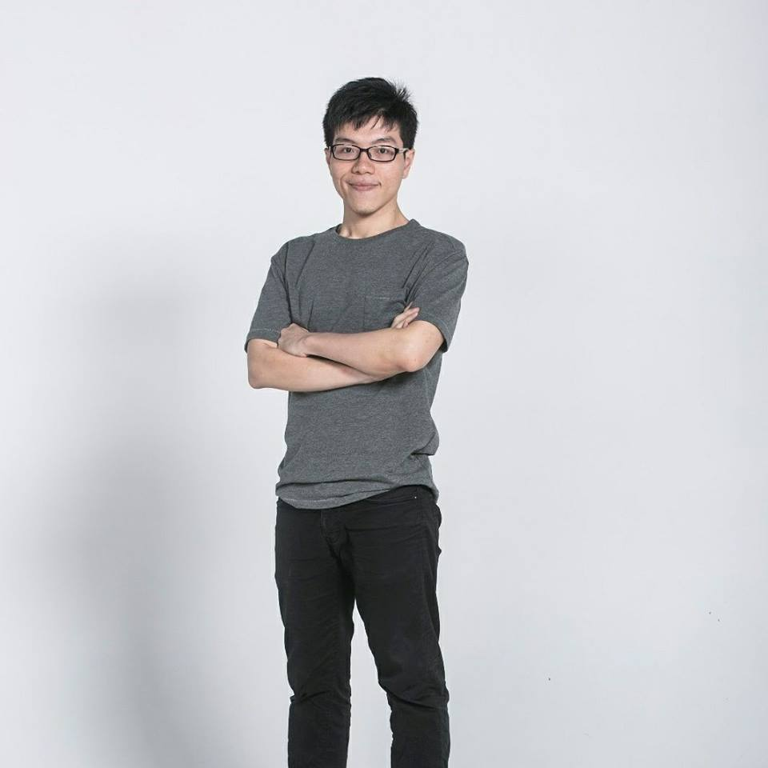

James KY Lam
Postgraduate Student
Dept. of CSE
HKUST
Curriculum Vitae (PDF)
Last Updated: Februry 16, 2019
Contact: kylambd<at>connect.ust.hk
About
Kit Yung Lam is a Postgraduate student in the Dept. of CSE at HKUST. He is advised by Prof. Pan HUI as a member of the SyMLab. He earned his B.Sc. from the School of Creative Media, City University of Hong Kong on July, 2013.
His research in Human-Computer Interaction focuses on Augmented Reality and Multimodel input Interface. James has previously worked on Augmented Reality(AR) system, from
hardware to software including end-user application and cloud server, to create an intuitive and easy to use AR system for providing a user-centric information visualization.
His latest work is building a framework to provide a user-centric web browsing experience adapted to AR devices
Publications
[c.4] M2A: A Framework for Visualizing Information from Mobile Web to Mobile Augmented Reality
Kit Yung LAM, Lik Hang LEE, Tristan BRAUD, and Pan HUI
PerCom 2019
[c.3] HIBEY: Hide the Keyboard in Augmented Reality
Lik Hang LEE, Kit Yung LAM, Yui Pan Yau, Tristan BRAUD, and Pan HUI
PerCom 2019
[c.2] 3D fog display using parallel linear motion platforms
Miu-Ling Lam ; Bin Chen ; Kit-Yung Lam ; Yaozhun Huang
2014 International Conference on Virtual Systems & Multimedia (VSMM)
[c.1] Path Planning as a Service PPaaS: Cloud-based Robotic Path Planning
Miu-Ling Lam ; Kit-Yung Lam
2014 IEEE International Conference on Robotics and Biomimetics (ROBIO 2014)
Awards
Teaching Experience
Responsibilities:
- Main Teaching Assistant
- Marked mid-term and final exams.